GPU ubrzanje
Veljko Petrović
Novembar, 2022
Koncept akceleratora i akceleratorske arhitektura
Finalni gradivni element heterogenih super-računarskih arhitektura
Šta je akcelerator?
- Procesor računara je napravljen da, manje-više, bude beskonačno podesiv i prigodan bilo kom poslu.
- Iako su određene primene brže sve je u principu moguće na CPU arhitekturi.
- Ovo se plaća: univerzalnost procesora znači da on nije maksimalno prilagođen nijednom poslu.
- Akcelerator je komponenta koja je deo računara pored procesora, a koja omogućava računaru da radi neke stvari brže kroz hardver optimizovan za specifičan scenario korišćenja.
Tipovi akceleratora
- Akcelerator se najbolje razlikuje po svojoj poziciji u sistemu. Akcelerator može biti:
- Na čipu
- Koprocesori
- Na magistrali
- Akceleratori na čipu su deo samog procesora i predstavljaju specijalizovanu komponentu u njima.
- Koprocesori su montirani odmah uz procesor, ali u posebnom pakovanju.
- Akceleratori na magistrali su odvojene komponente koje su nekakvom magistralom povezane za nekakav centralni procesor ili procesore.
Tipovi akceleratora
- Akceleratori koji su na čipu komuniciraju sa procesorom izuzetno brzo iz očiglednih razloga.
- Problem instaliranja akceleratora na čip jeste u tome što:
- To povećava toplotno/električne zahteve prema čipu koji se koristi što nije beskonačan resurs.
- Povećava kompleksnost čipa što se direktno negativno odražava na cenu.
- Nužno deli istu vezu sa memorijom koju normalno koristi procesor što je u skoro svakom sistemu ozbiljno usko grlo.
- Akceleratori se i dalje integrišu na čipove, ali samo u posebnim prilikama.
Tipovi akceleratora
- Akcelerator na magistrali ima određene izuzetno značajne prednosti:
- Problem upravljanja temperaturom i strujom je odvojen od glavnog procesora te ga je lakše rešiti.
- Akcelerator je u svom, jeftinijem, čipu.
- Akcelerator može da ima svoje memorijske resurse.
- Glavan mana akceleratora u ovoj formi jeste što stvara novo, ključno, usko grlo, a to je magistrala koja ga povezuje sa procesorom koji, nužno, mora funkcionisati kao kontroler i obavljati poslove učitavanja podataka iz glavne memorije i smeštanja rezultata u glavnu memoriju.
- Ovo ograničenje takođe smanjuje sposobnost upravljanja akceleratorskim resursima budući da su oni izolovani u svom malom svetu.
- Ova ograničenja se rešavaju programski.
Istorija akceleratora—koprocesorii
- Koprocesori su, fundamentalno, dodatni čipovi koji proširuju set instrukcija računara kroz hardverski-implementirane brze verzije operacija iz nekog specifičnog domena.
- Koprocesori mogu imati svoju memoriju (obično jako malo) ili deliti glavnu ili i jedno i drugo.
- U ličnim računarima i igračkim konzolama, koprocesori su dugo bili glavni način na koji su se relativno jeftino proizvodili impresivni efekti u performansama.
- Cena ovakve arhitekture na nivou individualne mašine jeste u ne-uniformnosti programiranja i tome što je fleksibilnost mašine dramatično ograničena.
- Ovo je fantastično ilustrovano u istoriji računarskih igara u periodu ranih 90-tih.
Koprocesori
- Koprocesori mogu da imaju izuzetno širok dijapazon primena, recimo:
- I/O kroz pametan DMA transfer
- video/audio kodiranje/dekodiranje i demultipleksiranje
- kriptografija
- DSP
- grafika
Sudbina koprocesora
- Koprocesori su i dalje sa nama, ali su uglavnom migrirali, specifično:
- Dosta I/O funkcionalnosti je (budući da je lako) završilo u ‘omnibus’ čipovima na matičnim pločama koji više nego adekvatno obavljaju sve ove poslove.
- Određene funkcije su ugrađene direktno u procesor uključujući FPU, MMX, i slično.
- Ostatak funkcionalnosti je završio u posebnim akceleratorskim dodacima, ponajviše u grafičkim karticama.
Istorijski primer koprocesora—Intel 8087
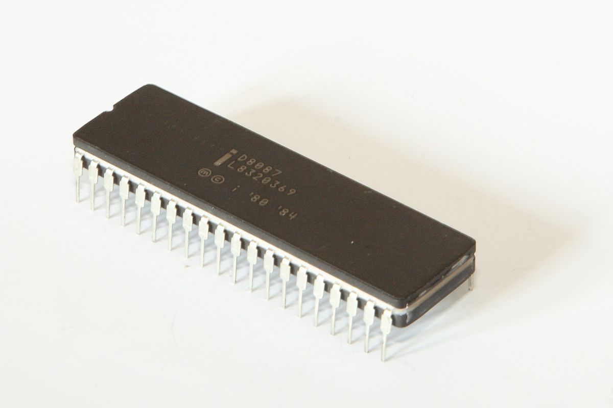
Operacije sa pokretnim zarezom
- Operacije sa pokretnim zarezom nisu lake
- Sabrati dva cela broja je lako na računaru
- Svodi se na XOR uz upotrebu bita prenosa, lako je kolo koje to radi napraviti (uistinu, ne moramo, TTL IC 7483 je baš to)
- Sabiranje dva broja sa pokretnim zarezom?
Sabiranje/oduzimanje brojeva sa pokretnim zarezom

Relativna kompleksnost FLOPS-ova
- Kao rezultat ovoga za lične računare, naročito, operacije sa pokretnim zarezom su bile gotovo nemoguće spore.
- To je značilo da čitave kategorije proračuna ne mogu da se efektno rade.
- Ali, budući da su algoritmi za operacije na brojevima pokretnog zareza poznati i definisani IEEE 754 standardom, moguće je implementirati ih u hardveru i ubrzati operacije pokretnim zarezom dramatično: to je Intel i uradio čipom Intel 8087
Intel 8087
- Trik je bio da se u mašinskom kodu ubaci ESCAPE komanda koja bi predavala kontrolu koprocesoru.
- Procesor bi (ne znajući da koprocesor uopšte postoji) izvršio očitavanje memorije koju instrukcija pominje (ako je ima), a onda bi te podatke presretnuo 8087 čip.
- Teoretski govoreći, procesor i koprocesor su mogli da istovremeno izvršavaju instrukcije.
- Teoretski.
- U praksi bi se pobili oko magistrale i srušili mašinu do tačke da je bio potreban hardverski restart. Zbog toga većina kompajlera iz tog perioda ubacuje WAIT komande odmah posle FPU komandi.
- Ovo je divna ilustracija problema on-chip i koprocesorski akceleratora.
Evolucija Intel 8087
- 8087 je unapređivan onako kako su unapređivani i procesori: 80187, 80287, 80387.
- 80387 koji je uparen sa Intel 80386 procesorom (koji je na vrlo realan način direktan predak modernih procesora, AMD i Intel) je prvi Intel FPU koji je u potpunosti kompatibilan sa IEEE 754 standardom (revizija iz 1985).
- 80486 serija procesora (i sve od tada do danas) integriše FPU na samom čipu.
Matematički koprocesori kao akceleratori na magistralii
- U ranim danima ličnih računara, postojala je ogromna glad za dobrim performansama u proračunima sa pokretnim zarezom.
- Dosta ljudi je htelo računara da računa nešto, a većina proračuna koju ljudi žele uključuje decimalne zareze.
- Ovo je stvorilo značajno tržište za posebne uređaje za ubrzane proračune.
- Primer toga je Weitek familija izuzetno (za to vreme) brzih FP akceleratora (Intel 8087 ostvaruje ~50 kFLOPS-a, Weitek WTL 3167 je mogao da ostvari 5.6 MFLOPS-a samo par godina kasnije).
- Weitek uređaji nisu bili integrisani u procesor, no su bili dodatni uređaji.
Rani dani akceleratora na magistrali
- Lako je staviti akcelerator na magistralu: kako on radi?
- Rani akceleratori ove vrste su sami implementirali svoj I/O mapiran na memoriju.
- To znači da su se Weitek uređaji pretvarali da su dodatan modul memorije i procesor je sa njima komunicirao tako što je izvršavao potpuno obične komande za premeštanje memorijskog sadržaja.
- PC arhitektura i danas koristi memorijsko mapiranje ove vrste, ali retko tako ‘divlje’ kao što su rani Weitek uređaji koristili.
- Kasniji modeli su i emulirali 8087 seriju (kroz presretač na utičnici za koprocesor) i komunicirali na standardniji način kao što je, na primer, EISA VESA local bus tehnologija.
Moderni magistralni akceleratori pre GPU revolucije
- Pre nego što je GPU tehnologija zavladala kao dominantna u svetu akceleratora, postojale su posebne kartice koje su radile istu stvar specifično za HPC svrhe.
- Recimo, ClearSpeed Advance X620
- Dva procesora
- PCI-X interfejs sa DMA transferom
- 50 GFLOPS
- 1GB ECC memorije
- 43W TDP
ClearSpeed Advance X620
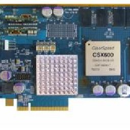
Arhitektura X620
- Svaki X620 je imao dva CSX600 procesora
- Svaki od tih procesora je imao jednu izvršnu jedinicu i određeni broj (zavisi od revizije) procesnih jedinica koje su grupisane u dve sekcije:
- Mono (obrađuje skalarne podatke kao blago glup procesor)
- Poly (Niz od 96 procesnih elemenata koji obrađuje nizove podataka uz tkzv. enable registre kao mehanizam da se određeni elementi koriste ili ne.
- Poly sekcija je operisala u klasičnom SIMD režimu.
Programiranje sa X620
- Sam po sebi X620 ne radi ništa.
- Mora se ručno aktivirati.
- Da bi se to olakšalo ClearSpeed je napisao ekstenziju programskog jezika C (Cn) koja je dodala ‘poly’ oznaku za memoriju koja je garantovala da će ta vrednost biti pristuna (i sinhronizovana) između memorije procesora i memorije kartice.
- ClearSpeed je još morao i da distribuira posebne biblioteke koje su implementirale čestu naučnu funkcionalnost, tj. BLAS, FFT, itd. na način koji je mogao da koristi ClearSpeed proizvode.
Mane akceleratora ove vrste
- Strahovito skupi
- Možete programirati samo u jeziku prozivođača!
- Ograničeni ste na biblioteke proizvođača ili one koje sami napište da koriste hardver kako treba.
- Konstantna briga oko lokacije podataka u memoriji
- ClearSpeed hardver je danas načisto zaboravljen
- Zašto? GPU revolucija.
GPU Revolucija
- Super-računari su bitni i skupi i sve je to jako lepo ali i najskuplji super-računar na svetu, strahovito impresivni IBM Summit je koštao $325 000 000.
- To je dosta novca, ali drugi način da se to kaže jeste ‘onoliko novca koliko je zaradio Call of Duty Black Ops 4 za oko dva dana.’
- Igračka industrija je ogromna i kao rezultat:
- Može da baci enormne sume novca na istraživanje
- Ekonomski efekti skaliranja znače da će cena čuda tehnologije koje proizvede to istraživanje biti dramatično manja.
- Budući da jako puno ljudi koristi i hoće da koristi taj hardver softverska podrška će biti mnogo univerzalnija.
Šta je GPU napravljen da radi?
- Prvi GPU-ovi (tada poznati pod imenom ‘video kartice’) su bili jako drugačije sprave nego danas i nisu imale nikakvu HPC primenu.
- Glavne funkcije GPU-ova te vrste su bile da digitalni signal (sadržaj framebuffer-a) pretvori u signal koji se može prikazati na ekranu, u to doba gotovo uvek analogni signal.
- Dodatne funkcije GPU-ova ove vrste u ne PC arhitekturama su bile funkcije 2D ubrazanja: brz blt transfer, hardverski sprajtovi, hardverska paralaksa…
- Jako jako korisno ako pravite video igru, ali nije interesantno za nas
- GPU revolucija ima svoj koren u operacijama neophodnim za 3D grafiku.
Šta 3D grafika hoće?
- Način na koji se tradicionalna 3D grafika radi jeste da se:
- Napravi 3D reprezentacija onoga što treba da se vidi kao serija temena, i ivica među njih definišući nekakvu geometriju.
- Ta 3D reprezentacija se anotira sa podacima koji opisuju detalje toga kako ta geometrija reaguje na svetlost:
- Normale
- Materijali
- Mapiranje teksture
- Zatim se sistemu dodaju podaci o izvorima svetlosti, pozicije kamere i sličnim globalnim detaljima.
- Onda počne proračun koji počne od ovoga a završi sa nizom vrednosti piksela, spremnim za (2D) prikaz.
Proračun 3D grafike
- Svako teme se procesuira tako da je transformisano kako je to odgovarajuće. Ovo se svodi na množenje matrica i vektora.
- Temena se grupišu u primitive u skladu sa specifikacijom.
- Geometrija scene se rasterizuje koristeći raycast metod, rezultat ovoga su fragmenti. Fragmenti su preteče piksela.
- Fragmenti scene se osvetljavaju i teksturiraju.
- Fragmenti se uzorkuju u piksele.
- 2D pikseli se prikazuju.
Osobine proračuna 3D grafike
- 3D grafika stalno vrši kompleksne operacije pokretnog zareza nad velikim nizovima podataka.
- Drugim rečima, grafička kartica je odličan SPMD akcelerator.
- Ali, kako je opisana ovakva grafička kartica je beskorisna za nas.
Istorija ranih 3D akceleratorskih kartica
- Sve počinje od legendarnih SGI radnih stanica: IRIX i OpenGL i najranije forme 3D ubrzanja baziranog na Quad primitivu.
- Poseban hardver za arkadne mašine.
- Na PC to stiže kroz posebnu seriju Voodoo kartica kompanije 3Dfx. Ovo su isključivo akceleratori 3D proračuna i zahtevaju posebnu 2D karticu.
- Kasnije Voodoo Banshee, S3 ViRGE, ATI Rage i NVidia TNT kartice integrišu 2D i 3D funkcionalnost.
- Ove kartice su, u početku obavljale samo određene deliće 3D operacija, tipično korekciju perspektive, mapiranje, i filtriranje. Karakterističan ‘mutan’ izgled ove ere 3D ubrzanja proizvodi niska rezolucija tekstura i linearan režim filtriranja
Shader?
- Danas ta reč znači nešto drugo (više o tome kasnije) ali u eri o kojoj govorimo šejder (shader) je bila operacija koja je punila delove ekrana nekakvim proračunatim vrednostima boja, tj. senčila je deo ekrana.
- Rani shader-i su bili fiksni ali su mogli da se parametrizuju
- Kasnije, određena količina programiranja je bila, jedva, moguća.
- To je bilo vrlo skučeno programiranje, doduše, često bez kontrole toka i ograničenim brojem funkcija i bez sposobnosti da se upravlja resursima kartice.
- Razvoj programabilnog shader-a
- Vođeni željom programera video igara da mogu da implementiraju različite grafičke algoritme sa većom fleksibilnošću, moć shader-a je napredovala, uvodeći sve veću kontrolu.
- To je eventualno dovelo do pada fiksnog toka izvršavanja (fixed function pipeline) gde su opšti stadijumi renderovanja bili hardverski uslovljeni i njegove zamene sa dinamičnim tokom izvršavanja.
- Ovo je vrlo brzo posle toga prošireno sa unificiranim shader-ima gde se oni sada tretiraju mnogo više kao programi koji se izvršavaju nego parametrizacije fiksnih koraka.
- Ovaj razvoj dostiže svoj vrhunac kroz moderne Vulkan/DirectX 12 implementacije
HPC primena
- U ovom stadijumu, primena GPU-ova za HPC je mnogo lakša.
- GPU možemo da opskrbimo teksturom i modelima koji su u stvari naši podaci i onda ‘render’ je u stvari naš proračun.
- Srećom, ni ovo nije potrajalo, i moderni GPU-ovi imaju poseban režim izvršavanja namenjen proračunima.
- Arhitektura modernog GPU-a
- Brojke se odnose na Paskal seriju Nvidia kartica, ali same informacije bi trebale da važe u trenutku pisanja.
- Većina procesa je u samom čipu kartice
- Centralni čip (GPU) se sastoji od:
- Grafičkih klastera (GPC-ova) (Paskal: 6 komada)
- L2 keša (Paskal: 4MB)
- Kontrolera za memoriju (Paskal: 8 512-bitnih)
- PCI Express kontrolera
- GigaThread podsistem
GPC
- Svaki GPC je potpun mini-GPU i radi sve što i GPU.
- GPC se deli u klastere teksturiranja koji se sastoje od glavne gradivne jedinice GPU-a: multiprocesore toka (streaming multiprocessors, SM)
- Svaki SM je procesorski element koji se sastoji od CUDA (Compute Unified Device Architecture) jezgara (Paskal: 64 jednostruke preciznosti i 32 dvostruke preciznosti) podeljenih u dva bloka od kojih svaki ima instrukcioni bafer, raspored niti, i 128KB registarske memorije. SM takođe ima 16 jedinica za rad sa memorijom i 16 jedinica za posebne funkcije aproksimacije.
Memorija
- Ovde postoji oštra razlika između potrošačkih modela i modela napravljenih baš za HPC
- Potrošački modeli i dalje koriste istu DDR memoriju kao i glavna mašina, samo na visokoj brzini i povezanu kroz izuzetno široku magistralu.
- Uprkos tome, pristup memoriji je značajno usko grlo.
- HPC modeli koriste mnogo efikasniju HBM2 memoriju
- HBM2 koristi tehniku gde se GPU i kontroler memorije nalaze u istom fizičkom paketu na deljenom supstratu (silikonskom sistemu presretanja) koji omogućava vrlo brzu komunikaciju
- Sama memorija je u pločama na samom kontroleru, i povezana je ultramalim ultrabrzim vezama kroz silicijum samog kontrolera i drugih pločica memorije.
HBM2
Pristup memoriji
- Moderni GPU-ovi podržavaju izuzetno kompleksan sistem pristupa memoriji koji koristi memorijske stranice da se postara da GPU kod može uniformno da pristupa svoj memoriji u računaru.
- Ovo je veliko olakšanje, ali naravno, pristup glavnoj memoriji ima ogromnu cenu.
- Tipično, problem se rešava tako što se memorija kopira u memorijski prostor kartice, no ovo stvara potencijalne probleme sa sinhronizacijom.
- Ovo je predmet intenzivnog istraživanja. ## Povezivanje
- Standardno povezivanje je preko PCI Express linka.
- PCI Express je brz (ali uvek može brže) plus problem nastaje:
- Šta kada hoću 4 kartice u jedan računar?
- Svaka kartica hoće 16 PCI Express linija za transport
- To je lepo, novi i9-9900K ima ukupno 16 PCI Express linija.
- Neki Xeon procesori imaju više, i Threadripper ima 32, ali, kao što se vidi, ukačiti dve kartice je teško
- Rešenje? NVLink
- NVLink je izuzetno visoko-performantni mehanizam za komunikaciju na male razdaljine.
Povezivanje
- NVLink može da povezuje kartice (i tako bi tipično i stavili dve kartice u prosečan računar), a i karticu i procesor ako to procesor podržava (IBM pravi procesore koji ovo mogu i oni su instrumentalni u funkcionisanju Summit mašine).
- Različite topologije su moguće.
- PCIExpress ima specifične svoje prednosti ako se koristi uz NVlink kroz RDMA funkcionalnost.
- RDMA omogućava da sa GPU-om komunicira memorija ili, još bolje, mrežna kartica apsolutno bez rada procesora. Ovo dramatično olakšava dizajn masivno paralelnih hibridnih heterogenih arhitektura visokih performansi.
Kako sve ovo programirati?
- NVidia ima CUDA API
- Maksimum performansi
- 0% portabilnosti
- Prilično ružna sintaksa koja zahteva poseban NVidia kompajler
- Odlični alati
- OpenCL
- Poseban jezik
- Maksimalno univerzalan
- OpenACC
- Proširenje C-a preko pragmi u OpenMP maniru
- Umereno univerzalan.
- I OpenACC i OpenCL žrtvuju nešto performansi za svoju brzinu.
OpenACC
Uniformna tehnologija pristupa akceleratorskom hardveru
Koja je veza između CUDA i ovoga?
- CUDA je specifična Nvidia tehnologija.
- OpenACC je otvorena specifikacija koja je namenjena da glatko podrži širok dijapazon akceleratorskih uređaja.
- Šta karakteriše baš akceleratorski uređaj?
- Posebna namena
- Posebna hijerarhija memorije
- Nečim ograničen transfer.
- OpenACC nam omogućava da pišemo optimizovan kod koji ovo uzima u obzir i sređuje transfer mesto nas.
- To znači da je promenljiva za nas jedan jedini objekat koji može biti u memoriji sistema i u memoriji akceleratorskog uređaja.
Opšta struktura
- OpenACC deli dosta osobina u svom dizajnu sa OpenMP i OpenMPI tehnologijama.
- Sa oba deli to što pokušava da bude, u što je većoj meri moguće, standardni programski jezik (to jest, C)
- Sa OpenMP deli oslanjanje na pragme.
- Kao i OpenMP, podrška mora da bude ubačena direktnu u kompajler.
- GCC 8 podržava OpenACC 2.5, GCC 7 OpenACC 2.0a
- GCC 12 podržava OpenACC 2.6
- Najnovija je 3.3
Nešto termina
- Domaćin (eng. host)
- Domaćin je računar na kome se izvršava kod i koji ima neki broj akceleratora
- Prebacivanje (eng. offloading)
- Prebacivanje je mehanizam kojim se posebno specificirani delovi koda prebacuju na akcelerator.
Paralelizmi u OpenACC modelu
- OpenACC prepoznaje tri nivoa paralelizma kod akceleratora:
- Grub (coarse grain)
- Fin (fine grain), i
- Individualan
- Grub paralelizam deli poslove na više resursa za proračun.
- Fin paralelizam tipičnu distribuira poslove na individualne procesne elemente.
- Individualan paralelizam je u okviru jednog PE, i izlaže paralelizam SIMD/vektor tipa direktno.
- Ovi nivoi u ACC-u se predstavljaju gang, worker, i vector paralelizmima.
Gang, Worker, Vector
- Gang (tim) je najviši nivo paralelizma za OpenACC model.
- Svaki uređaj akcelerator izvršava neki broj gang-ova koji imaju jedan ili više radnika (worker-a) koji izvršavaju ili individualne ili vektorske instrukcije.
- Vektorski paralelizam mora biti vrlo uniforman: ista stvar za više podataka u klasičnom SIMD maniru.
- Worker paralelizam je malo opušteniji ali deli iste resurse budući da svaki gang je, hardverski, definisan kao nešto što deli iste procesne resurse.
- U NVidia svetu to znači da je Gang gotovo uvek vezan za jedan SM.
- Gang paralelizmi su nezavisni. ## Gang, Worker, Vector 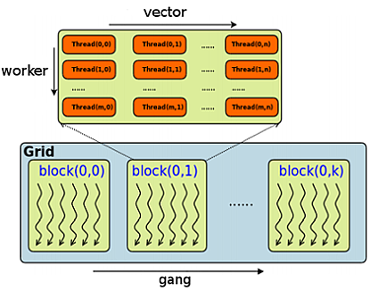
Režimi izvršavanja
- Izvršavanje OpenACC koda uvek počinje u Gang-Redundant režimu (GR). To je režim u kome svaki gang ima jednog radnika koji izvršava isti kod. Drugim rečima, nema paralelizma.
- Kada se u OpenACC kodu stigne to paralelnog segmenta prelazi se u Gang-Partitioned režim (GP) u kome su iteracije jedne petlje (ili, čak, više petlji) distribuirane između gang-ova, ali svaki gang i dalje ima samo jednog radnika koji radi na individualnim elementima u, tkzv. Worker-Single i Vector-Single režimima.
- Na GP nivou u WS/VS režimu mi smo veoma kao OpenMP i niti.
- Ako se to zatraži, moguće je aktivirati Worker-Partitioned režim gde se posao deli između radnika, te je u okviru radnika moguće zatražiti Vector-Partitioned režim
Režimi izvršavanja
- Može se o ovome misliti kao o OpenMP-u u kome je ugnježdavanje paralelizma ne samo moguće nego neophodno i to na tri nivoa.
- OpenMP niti su sve stvorene jednake, te nema performantnog razloga da preferiramo 3x2x2 niti u odnosu na 12 niti.
- U OpenACC postoji hijerarhijska podela na hardverskom nivou, te ukupne niti se najbolje dele na gang/worker/vector po tome koliko su podaci nad kojima radi nit vezani jedni za druge.
- Spuštati stvari na akcelerator nema puno smisla osim ako podaci nisu barem malo povezani i stoga prigodni. Spuštati stvari na vektorski nivo nema smisla osim ako (predvidivo) u pitanju nisu vektori.
OpenACC Hello World
#include <stdio.h>
#include <openacc.h>
int main(){
printf("ACC VERZIJA: %d\n", _OPENACC);
int count = acc_get_num_devices(acc_device_nvidia);
printf("NVIDIA GPU-ova: %d\n", count);
int n = acc_get_device_num(acc_device_nvidia);
printf("Podrazumevani GPU: %d\n", n);
n = acc_get_device_num(acc_device_host);
printf("Podrazumevani CPU: %d\n", n);
return 0;
}Kompajliranje OpenACC koda
[user@host ~]$ gcc hello.c -fopenacc -o hello
OpenACC sistemske promenljive
| Promenljiva | Namena |
|---|---|
| ACC_DEVICE_TYPE | Tip uređaja koji se koristi za pokretanje koda. Može NVIDIA, RADEON, i HOST |
| ACC_DEVICE_NUM | ID fizičkog akceleratorskog uređaja koji se koristi |
| ACC_PROFLIB | Biblioteka za profiliranje |
OpenACC direktive
- Rade neverovatno slično kao u OpenMP-u.
- Sve počinju sa #pragma acc
- Zatim ide direktiva te onda klauzule koje parametrizuju direktivu.
Konstrukt paralelizma
#pragma acc parallel- Ovo se odnosi na blok koda i znači da se on izvršava u paraleli
- Podrazumevano je da se izvršava u GR (ne-baš-paralelnom) modu osim ako ne dodamo klauzule koje to spreče.
- Svaki paralelni blok se završava sa implicitnom sinhronizacijom.
- Paralelni blokovi ne smeju da imaju grananje.
Klauzule #acc parallel direktive
async[(integer)]- Uklanja implicitnu barijeru na kraju i omogućava da procesor-domaćin radi stvari konkurentno sa kodom na GPU-u. Može da u zagradi ima brojku. Ta brojka je identifikator reda izvršavanja (activity queue) koji obrađuje stavke ovog bloka. Ta brojka se kasnije može koristiti kao parametar ‘wait’ klauzule da bi se omogućila sinhronizacija.
wait [(integer-list)]- Blokira izvršavanje dok se navedeni redovi izvršavanja (kao brojevi u listi parametara) nisu kompletirali. Ako se ne navedu brojevi, čeka se da se sav asinhroni posao ne završi.
Klauzule #acc parallel direktive
num_gangs(integer)- Traži (ali ne dobija garantovano) koliko gang-ova će se koristiti za podelu posla.
num_workers(integer)- Kao gore, ali za radnike. Odnosi se samo na WP mod, naravno.
vector_length(integer)- Kao gore, ali traži određeni broj vektorskih procesnih linija, u VP režimu. Na NVidia uređajima valja birati umnožak 32.
Kernels konstrukt
#pragma acc kernels- Odnosi se na blok, kao i parallel
- Ponašanje određuju klauzule
- Radi kao parallel (i prima iste klauzule) sa jednom ogromnom razlikom.
- Tamo gde je parallel zahtevao ručno podešavanje, kernels konstrukt analizira kod i sam distribuira posao.
- Drugim rečima ovo je magična ‘make my code fast’ direktiva koja zna da prepozna kada imamo, npr. tri ugnježdena for loop-a, da to podeli na gang/worker/vector nivou.
Upravljanje podacima
- Najvažnije usko grlo u programiranju akceleratora jeste u tome što je memorija akceleratora odvojena od memorije računara domaćina
- Sva komunikacija između ove dve memorije prolazi kroz magistralu koja je već preopterećena, skoro po definiciji.
- Ovo nije garantovano ponašanje: AMD ima uređaje za ubraznje proračuna koji dele memoriju sa glavnim procesorom, te je overhead minimalan.
- Ali GPU-ovi su napravljeni tako kako jesu zbog potreba igara, i stoga, kada jednom učitate teksture i šejdere u radnu memoriju kartice, proračuni idu gotovo bez komunikacije sa ostatkom sveta.
Upravljanje podacima
- Automatizam je, u teoriji, moguć.
- U praksi? C/C++ je toliko kompleksan da je vrlo teško da statičkom analizom dođemo do zaključka koji deo memorije se kako koristi.
- Podrazumevano, OpenACC greši na stranu tačnog izvršavanja na račun brzine i kopira sve:
- Sve strukture podataka se kopiraju sa domaćina na karticu
- Radi se proračun
- Kopiraju se svi podaci nazad.
- Automatsko kopiranje ove vrste samo radi bezbolno i implicitno ako se radi sa statički dimenzionisanim nizovima. Dinamički alocirana memorija se kopira rukom.
Ručno upravljanje memorijom
- Moguće je upravljati memorijom direktno kroz klauzule za upravljanje memorijom koje idu posle većine direktiva (parallel i kernel, recimo).
- Metod rada sa memorijom se bazira na brojanju referenci: svaka struktura memorije ili postoji u memoriji kartice ili ne. Ako postoji, broji se broj blokova u programu koji traži pristup toj strukturi kroz broj referenci.
- Čim se završi blok koji je koristio neku strukturu, broj referenci se smanji za jedan i ako stigne na 0, podaci se kopiraju nazad u glavnu memoriju.
Ručno upravljanje memorijom—klauzule
- copy(variable-list)
- Copy klauzula specificira koji podaci trebaju datom paralelnom regionu. Promenljive koje nisu kopirane se kopiraju, a promenljive koje jesu se anotiraju sa povećanim brojem reference.
- copyin(variable-list)
- Kao copy, ali se podaci kada broj referenci stigne do 0 ne kopiraju nazad, no se samo dealociraju.
- copyout(variable-list)
- Kao copy, ali se ništa ne prenosi u memoriju. Broj referenci se povećava, i ako je 0 memorija se alocira ali se ništa ne prenosi na samu karticu. Kada broj referenci dostigne 0, podaci se kopiraju nazad.
Ručno upravljanje memorijom—klauzule
- create(variable-list)
- Kao copy, ali niti prenosi podatke na karticu, niti ih vraća nazad.
- Esencijalno alocira pomoćnu memoriju na kartici.
Specifikacija promenljivih
- variable-list se sastoji od promenljivih razdvojenih zarezima
- Promenljiva se sastoji od obaveznog identifikatora i opcionog dimenzionisanja
- Identifikator je ime promenljive
- Dimenzionisanje se sastoji od specifikacije delova strukture (multidimenizionalnog niza) koji se kopiraju i navodi se za svaku dimenziju kao specifikacija raspona
- Raspon se piše u uglastim zagradama i sastoji se od početnog indeksa i dužine razdvojene dvotačkom.
- Početna vrednost se može preskočiti (te je onda 0)
- Krajnja vrednost se može preskočiti na statički dimenzionisanim nizovima (te je onda ravna dužini niza).
Specifikacija promenljivih—primeri
a[5:t]- Niz a počevši od 6-tog elementa sa ukupno t elemenata, tj.
a[5], a[6], …, a[5+t-1]
- Niz a počevši od 6-tog elementa sa ukupno t elemenata, tj.
mat[:N][16:32]- Region matrice mat koji obuhvata prvih N redova i sekcije kolona od po 32 elementa koje počinju sa 17-im elementom svakog reda.
Definisanje n-dimenzionalnih nizova u C/C++ na OpenACC-kompatibilan način
- Statički dimenzionisani nizovi
- Ograničenje: ako radimo sa ovim, naše specifikacije onoga što se prenosi mora da definiše kontinualni region memorije.
- Pokazivači na statički dimenzionisane nizove
- Statički alocirani nizovi pokazivača
- Pokazivači na nizove pokazivača
- Mešane alokacije
OpenACC i petlje: loop pragma
#pragma acc loop- Ide uvek ispred for petlje
- Mora biti ili kombinovana sa ili unutar parallel/kernel direktive
- Kernel direktiva ih pravi sama, ali možemo da mi ubacimo naše da kažemo sistemu tačno šta hoćemo.
- Kao i obično, klauzule određuju ponašanje ove pragme
Klauzule loop pragme
collapse(integer)- Na koliko ugnježdenih for petlji se odnosi ova direktiva. Podrazumevano je 1.
gang[(static:integer|*)]- Aktivira paralelno izvršavanje po gang-ovima
- Statički parametar nam omogućava da podesimo chunking kao i u OpenMP-u
- znači da chunking ostavljamo implementaciji
worker- Aktivira paralelizam po worker-ima, tj. WP-mod
Klauzule loop pragme
vector- Aktivira VP mod
auto- Dobijemo šta inače radi kernel podrazumevano: statičku analizu koda i automatsku paralelizaciju.
independent- Garantujemo kompajleru da je svaka iteracija naše petlje potpuno nezavisna od svake druge, te da se kod može paralelizovati mnogo više.
Klauzule loop pragme
reduction(operator:variable[,variable…])- Kao i u svim okruženjima do sada, radimo sa redukcijom.
- Operator može biti +, *, max, min, /, |, &&, i ||.
- Promenljive koje se navode kao učesnici ne smeju a budu elementi niza ili strukture. To jest, samo obični skalari.
OpenACC i doseg promenljivih
- OpenACC jako vodi računa o dosegu: jako je bitno gde se promenljive deklarišu
- Na primer, sve promenljive u petlji su privatne za niti koja izvršava datu iteraciju petlje.
- Promenljive u bloku koji je markiran za VP su privatne za vektorsku liniju izvršavanja.
- Promenljive u bloku koji je markiran za WP su privatne za svakog radnika, ali deljene kroz vektorske linije izvršavanja.
- Možemo da iznudimo ovo ponašanje kroz ’private’ klauzulu.
Eksplicitna sinhronizacija u OpenACC
- Valja je izbeći.
- Ali ponekad mora.
- E, pa, kada mora onda je proces ovakav:
#pragma acc atomic- Definiše statement koji je atomski, to jest, ne može se prekinuti.
- Tip atomskog izvršavanja se definiše klauzulom
Atomske klauzule
read- Garantovan atomski pristup promenljivama sa desne strane operatora dodele.
write- Garantovan atomski pristup promenljivama sa leve strane operatora dodele.
update- Garantovano i čitanje i pisanje, ali samo u fiksnim formama koje koriste read-modify-write sekvencu kao što je prefix i postfix inkrement i dekrement kao i svi operatori forme op=
capture- Poseban slučaj kada hoćemo da zaštitimo update-tip operacije sa desne strane znaka jednako, a sa leve vrednost koja hvata vrednost modifikovane promenljive ili pre ili posle modifikacije tj.
a = i++;
- Poseban slučaj kada hoćemo da zaštitimo update-tip operacije sa desne strane znaka jednako, a sa leve vrednost koja hvata vrednost modifikovane promenljive ili pre ili posle modifikacije tj.
CUDA
Brz pregled
Šta je u stvari CUDA?
- CUDA je model programiranja i platforma za paralelno računastvo na akceleratorskim arhitekturama.
- U praksi taj model programiranja je integrisan u skup alata koje proizvodi Nvidia što uključuje osnovnu biblioteku, plus reimplementaciju nekakvih standardnih biblioteka za HPC u CUDA obliku.
- cuBLAS
- cuSPARSE
- cuFFT
- Tu su takođe i originalne biblioteke posebne namene kao što je, npr. cuDNN i TensorRT koji su tako ključni za rad u veštačkoj inteligenciji.
Gde radi CUDA?
- Na Nvidia karticama
- Tačna lista je ovde:
- https://developer.nvidia.com/cuda-gpus
Osnovne apstrakcije CUDA okruženja
- CUDA pokušava da omogući da se programira u kompleksnom okruženju akceleratorske tehnologije tako što inkorporira u sebe tri glavne apstrakcije:
- Hijerarhija grupa niti
- Hijerarhija deljenih memorija
- Barijerna sinhronizacija
Hijerarhije
- Ključna ideja jeste da se problem koji se rešava podeli tako da se identifikuju
- Grubi paralelizmi zadatka i podataka koji predstavljaju stvari koje CUDA runtime može da podeli na koliko god procesnih elemenata (SM-ova) ima na raspolaganju.
- Sitni paralelizam podataka i niti koje se odnose na zadatke koje se moraju rešiti unutar SM-a kooperativno.
SM?
- SM je Streaming Multiprocessor, osnovna gradivna jedinica CUDA-sposobnog uređaja.
- Specifikacije SM-a koga koristimo su jako bitne i variraju između verzije.
- Termin za verziju je u CUDA svetu ’compute capacity’ i mi ovde posmatramo 8.6 arhitekturu.
- Neophodno je, prilikom napredne optimizacije, kod prilagoditi koliko god je to moguće okruženju u kome se izvršava, tako da u zavisnosti od kartice koju koristite morate gledati drugu specifikaciju.
Sve su dostupne u zvaničnom vodiču za programiranje CUDA arhitekture.
- Compute Capability 8.6 SM specifikacija
- 128 FP32 jezgra za proračune
- 64 FP64 jezgra za proračune
- 64 INT32 jezgra za proračune
- 4 jezgra tenzorskog tipa (treća generacija) pomešane preciznosti
- 16 posebna jezgra za proračun transcedentalnih funkcija jednostruke preciznosti
- 4 raspoređivača spleta (warp, više o tome kasnije)
- Keš za konstantnu memoriju
- 128kb unificirane keš memorije iz koje se alocira deljena memorija i L1 keš. Legalne vrednosti deljene memorije su 0,8,16,32,64,ili 100 KB.
Float i double
- Verovatno vam je već rečeno da na bilo kom modernom CPU-u, upotreba double je jednako dobra kao i upotreba float-a: čak je i na nekim mestima brža pošto se float vrednost samo proširuje da bi stala u FPU registre koji su sami po sebi double.
- Ovo nije slučaj u GPU programiranju.
- Float proračuni su tačno dvaput ’jefintiji’ nego double proračuni, i dosta internih struktura (npr. modularizacija deljene memorije o čemu više kasnije) su napravljeni sa idejom da se prenose float vrednosti.
- Kao rezultat, gde god da ima smisla koristiti float, on se treba koristiti budući da se dupla preciznost sada ’plaća.’
Kernel
- Hijerarhija se eksponira kroz različite konstrukte u jeziku koji se koristi
- Mi ovde koristimo C++ koji je ’maternji’ za CUDA okruženje
- U njemu među najosnovnijim konstruktima se nalazi paralelna funkcija odn. ’kernel.’
- Ako proglasimo da je neka funkcija kernel ono što želimo da kažemo kroz to CUDA okruženje jeste da želimo da možemo da datu funkciju pozovemo na više niti paralelno.
- Specifikacija na koliko niti se radi se određuje prilikom poziva, a svaka instanca funkcije tokom izvršavanja zna koja je nit odgovorno kroz ugrađenu promenljivu threadIdx
Izvori
- Kod u ovom primeru je adaptiran iz zvanične NVidia dokumentacije: https://docs.nvidia.com/cuda/cuda-c-programming-guide/index.html
Kernel
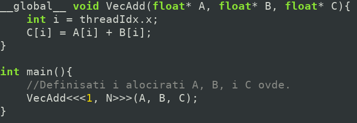
threadIdx
- threadIdx je promenljiva koja će biti dostupna u telu kernel-a i identifikuje aktuelnu nit.
- U CUDA okruženju to je trokomponentni vektor sa X, Y, i Z vrednostima da bi olakšao deljenje stvari koje se lakše mapiraju na 2D ili 3D ćelije, na primer.
- Ovde prilikom invokacije specificiramo 1, N što znači da želimo 1D varijantu gde je samo .x element bitan, i to hoćemo jedan blok niti, koji je 1D i ima samo jednu dimenziju, N.
- Za višedimenzionalniju vrednost treba nam da threadsPerBlock bude ne jedan broj nego nešto sa više dimenzija: koristi se ugrađeni CUDA tip ’dim3’
threadIdx
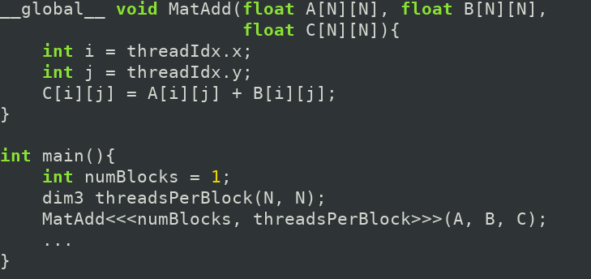
threadIdx
- Ovde imamo jedan blok koji se sastoji od blokova sa NxN elemenata.
- Valja voditi računa da se ovo razlikuje od 1D niza sa N2 elemenata.
- Generalno je dobra ideja koristiti onoliko-dimenzionalne blokove koliko su podaci nad kojima se operiše
Veza između threadIdx i identifikatora niti
- Za 1D blok Dx
- ID(x) = x
- Za 2D blok Dx * Dy
- ID(x,y) = x + y*Dy
- Za 3D blok Dx * Dy * Dz
- ID(x,y,z) = x + yDx + zDx*Dy
Limiti identifikatora niti
- Na modernim GPU uređajima, ograničenje je 1024 niti po bloku.
- Sa ovim se bori tako što se prave dodatni blokovi
- Ti dodatni blokovi, baš kao i niti unutar bloka, mogu da budu 1D, 2D, ili 3D na sličan način kao i niti unutar bloka
- Nema tvrde granice koliko može biti blokova, ali je pravilo da između blokova nema komunikacije, i da se blokovi izvršavaju u makojem redosledu: potpuno pod kontrolom runtime-a
- Takođe, svaki blok mora biti sasvim jednak.
- Dimenzije blokova određuje prvi parametar prilikom izvršavanja i to može biti dim3 ili int i funkcioniše apsolutno identično kao i u slučaju dimenzionisanja niti.
blockIdx i blockDim
- Dimenzije bloka su dostupne iz unutrašnjosti thread-a kroz dve promenljive, obe od kojih su trokomponentni vektori tipa dim3.
- blockIdx nam kaže u kom smo bloku, baš kao što je to govorio threadIdx za to u kojoj smo niti unutar bloka
- blockDim nam kaže kolike su dimenzije aktuelnog bloka po sve tri ose.
- Na raspolaganju je i gridDim ugrađena promenljiva koja nam kaže koliko ima ukupno blokova i kako su raspoređeni (struktura za raspoređivanje blokova se u CUDA okruženju zove ’grid’)
Indeksi unutar CUDA okruženja (2D slučaj)
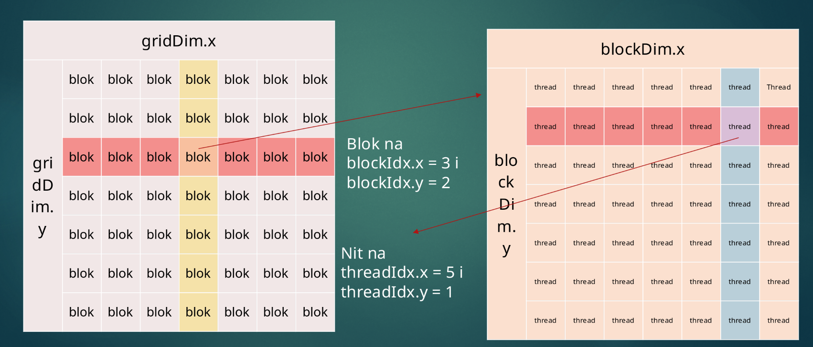
Primena blokova
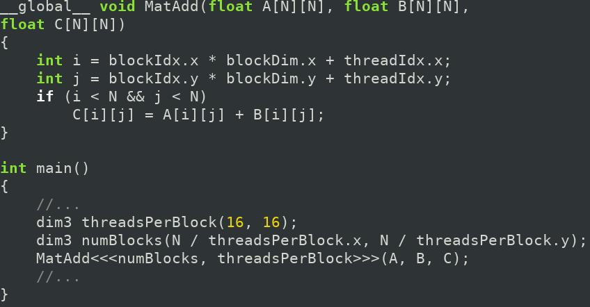
Splet niti
- Na hardverskom nivou se još pojavljuje i koncept spleta (eng. Warp)
- Ovo nije apstrakcija namenjena programeru, koliko je podela koju iznuđuje hardver.
- Splet niti je grupa od 32 niti (tu grupaciju određuje hardver/runtime) koje su takve da izvršavaju istu instrukciju u istom trenutku.
- Ovo je deo tkzv. SIMT modela (single instruction, multiple threads).
- Valja primetiti da niti mogu imati grananja.
- U tom slučaju, splet raspoređivač će da izvrši svaku granu samo što će niti za koje data nit ne važi da isključi.
- Ovo znači da nam je od velike koristi ako su niti u 32-nitnim blokovima takve da imaju što manje grananja.
Saradnja unutar bloka
- Unutar jednog bloka, niti mogu da sarađuju.
- Sarađivanje unutar bloka između niti se bazira na dva koncepta: deljena memorija i sinhronizacija izvršavanja.
- Sinhronizacija izvršavanja se na primitivnom nivou može obavljati kroz ugrađenu funkciju __syncthreads() koja, kada se pozove, postane sinhronizaciona barijera: sve niti u jednom bloku stanu dok sve ne dostignu tu barijeru.
- Postoji i sofisticiraniji model za situacije gde je potrebna granularnija sinhronizacija kroz nešto što se zove ’API za grupe kooperacije’ odn. ’Cooperative Groups API’
- Deljena memorija se samo može razumeti kroz njeno mesto u hijerarhiji memorije.
Memorijska hijerarhija
- U klasičnom modelu programiranja, sva memorija se tretira isto.
- U praksi, mi znamo da neke stvari idu u različite keš memorije, ali se ovo generalno govoreći ne podešava rukom.
- U CUDA svetu, memorijom se mora upravljati mnogo pažljivije
- Prva podela je između memorije host računara, tj. Radne memorije računara na kome se CUDA program izvršava i memorije GPU-a (tehnički termin je ’device’ memorija)
- Unutar memorije GPU-a postoji kompleksna hijerarhija memorije bazirana na tome kome memorija ’pripada,’ kako joj se pristupa i pod kojim uslovima, i da li je perzistentna.
Memorijska hijerarhija
- Hardverski govoreći, memorija GPU-a se deli na on-chip i off-chip memoriju.
- Off-chip memorija je memorija samog GPU uređaja i pristup njoj je komparativno spor i ima visoko kašnjenje.
- On-chip memorija je deo samog silikona grafičkog procesora, ima je malo, i jako je brza. Ta memorija je slična kešu, ali se može njom upravljati i potpuno direktno.
Memorijska hijerarhija
- Logički, memorija kojoj se pristupa u CUDA modelu je
- Thread memorija koja je isključiva za nit i fizički je deo on-chip memorije.
- Deljena (shared) memorija koja je isključiva za blok niti i pristup se može obaviti jako brzo.
- Globalna memorija je dostupna svima, perzistentna je, ali je off-chip i spora.
- Lokalna memorija je dostupna samo jednoj niti, ali je to samo apstrakcija nad globalnom memorijom, te je jednako spora.
- Konstatna memorija se nalazi off-chip ali ima za sebe specifičan keš.
- Memorija tekstura/površine je off-chip ali ima specifičan keš i specifično pravilo keširanja i učitavanja koje je optimizovano za operacije nad teksturama. ## Strategije brzog pristupa
- Fundamentalna ’tajna’ dobrog CUDA programiranja je dobra ideja o tome gde su podaci koji nam trebaju u bilo kom trenutku.
- Naš cilj:
- Minimizirati broj transfera između host i device memorije što je više moguće: to je prvo usko grlo.
- Minimizirati broj pristupa off-chip memoriji.
- Tipičan obrazac ponašanja je ’staging’ pristup u kome se operacije dele u faze u kojoj svaka ima neku oblast memorije koja je zanima.
- Ovo se radi posebno za blokove memorije i posebno za transfer host-device, mada ako je to moguće, ovaj drugi transfer se onda uradi samo jednom, na početku.
Staging za deljenu memoriju
- Tipično ponašanje jeste da:
- Svaki blok učita u deljenu memoriju onaj deo iz globalne memorije koji je potreban za datu fazu.
- Tipično svaki element kopira po jedna nit u paraleli.
- Onda se unutar kernela aktivira barijerna sinhronizacija da bi bili time sigurni da je svaka nit završila svoje kopiranje, jer onda (zbog deljene memorije) svi mogu da pristupaju svim prekopiranim materijalima.
- Ovako se dramatično umanjuje cena kašnjenja po pristupu globalnoj memoriji, budući da se svakoj neophodnoj lokaciji pristupi jednom (prilikom kopiranja u deljenu memoriju) umesto svako put kada je potrebnom nekoj niti.
Napredne strategije optimiziacije pristupa deljenoj memoriji
- Deljena memorija ima specijalizovan način pristupa koji dramatično povećava protok ka memoriji pod vrlo specifičnim uslovima.
- Deljena memorija je podeljena u module (bank) koji su tako hardverski organizovani da sukcesivne 32-bitne reči odgovaraju sukcesivnim modulima, svaki od kojih ima protok od 32 bita po ciklusu sata.
- Ovo znači da ako bi od 32 niti svaka zatražila po 32-bitnu vrednost jednu za drugom, ovo bi se učitalo u jednom ciklusu budući da bi svaka nit pričala sa drugim modulom.
- Ako neke niti traže istu 32-bitnu reč, onda je takođe brzina očuvana.
- Problem nastane ako bude konflikta modula (eng. Bank conflict)
Napredne strategije optimiziacije pristupa deljenoj memoriji
- Konflikt modula nastaje kada dve niti zatraže u isto vreme reči koje se mapiraju na isti modul: ti pristupi se onda moraju serijalizovati.
- Ovo smanjuje povećanje u protoku koje inače nudi ovaj mehanizam podele memorije.
- Kao rezultat jako je bitno poravnati podatke u deljenoj memoriji tako da se ovi konflikti minimizuju.
- Ponekad ovo prirodno sledi ako su podaci ravnomerno distribuirani, ali postoje situacije gde memoriju treba reorganizovati da se održi konstantan stride između pristupa.
Efikasan pristup globalnoj memorji
- Globalna memorija (kada joj se mora pristupati) ima svoja ograničenja: svaki pristup toj memorji mora biti obavljen preko memorijskih transakcija koje su takve da se prenosi 32, 64, ili 128 bajta istovremeno.
- Memorijske transakcije moraju imati tkzv. prirodno poravnanje.
- To znači da njihova bazna adresa mora biti umnožak odgovarajuće veličine (32, 64, ili 128 bajta).
- Kada splet niti treba da pristupi memoriji, svi ti pristupi se kombinuju (tehnički termin je coalesce) u ove transakcije.
- Stoga efikasan pristup globalnoj memoriji pokušava da tako rasporedi pristupe globalnoj memorji da se mogu kombinovati u što manje transakcija
Linearan memorijski model
- Budući koliko je ovo sve zahtevno, neophodno je olakšati pristup memoriji koliko god je to moguće.
- Kao rezultat, novije verzije GPU-ova podržavaju linearan sistem pristupa memorji gde se apsolutno sva memorija dostupna i na host-u i na device-u tretira kao jedan, unificiran, džinovski memorijski prostor.
- To znači da pokazivači rade bez obzira gde su (tj. njihov sadržaj sam po sebi je dovoljan da nam kaže o kojoj memoriji je reč)
- Ova funkcionalnost je samo dostupna kroz CUDA runtime i odgovarajuće alate
CUDA alati
- Sva ova apstrakcija samo može da se stavi u praksu kroz programiranje koristeći odgovarajuće ekstenzije na neki programski jezik.
- CUDA se trudi da C++ modifikuje što je to manje moguće
- Uprkos tome, ima izmena i kao rezultat kod se mora kompajlirati posebnim kompajlerom koji izrađuje Nvidia, nvcc.
- Ovaj kompajler je odgovoran i za kod koji se izvršava na CPU-u, i tu uglavnom vodi računa o tome kako će se ekstenzije koda (kao što je recimo sintaksa za pozivanje kernela) pretvoriti u odgovarajuće pozive CUDA runtime-a.
- Što se GPU koda tiče, tu je nvcc više odgovoran i kompajlira C++ kod u posebnu binarnu formu, PTX koju kasnije drajver može da JIT-uje u formu specijalizovanu za dati specifični GPU.
Praktičan primer rukovanja sa memorijom
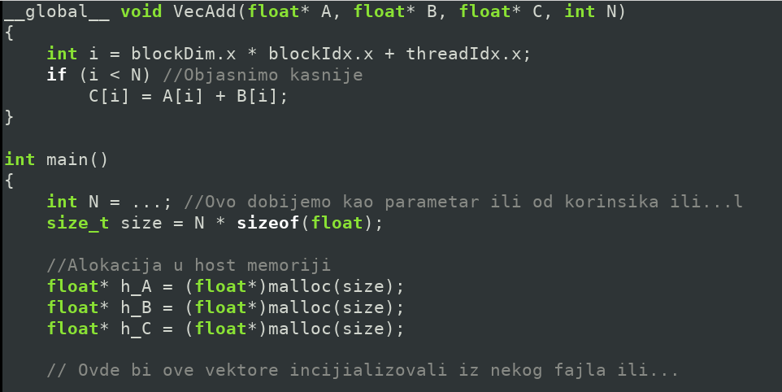
Praktičan primer rukovanja sa memorijom
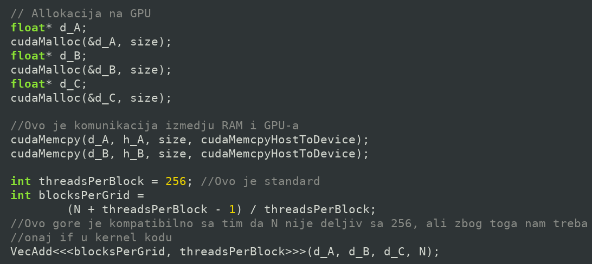
Praktičan primer rukovanja sa memorijom
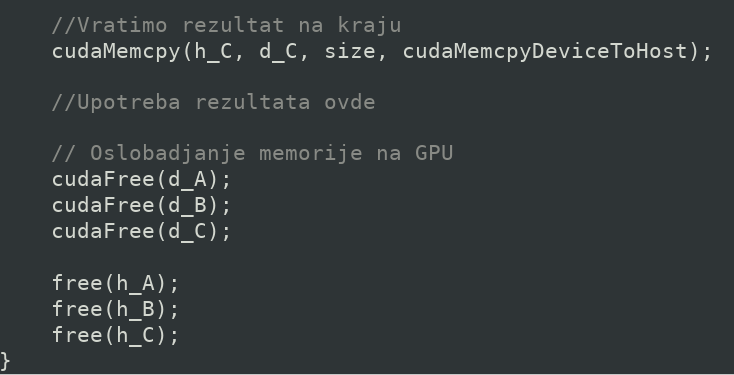
Alokacija memorije za višedimenzionalne nizove
- Memorija se mora alocirati za rad sa 2D i 3D nizovima na poseban način koji vodi računa da su podaci poravnani za pristup.
- To poravnanje može da bude prilično komplikovano ali, srećom, CUDA pruža alate koji to čine relativno bezbolnim.
- cudaMallocPitch je za 2D nizove i ima adekvatnu cudaMemcpy2D fukciju.
- cudaMalloc3D je za 3D nizove i ima adekvatnu cudaMemcpy3D funkciju
Poravnan 2D niz primer
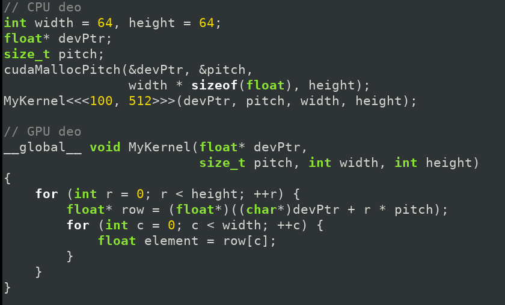
Pitch?
- Ovde su ubačeni dodatni podaci u svaki red, tako da pokazivač na početak reda mora da ’preskoči’ onoliko bajtova koliko je tekući red puta puta pitch (fizička širina reda), a ne puta width (logička širina).
- Umesto da pitch računamo mi, alokaciona funkcija to izračuna umesto nas i da nam ga kao izlazni parametar.
- Da bi radilo sa bilo kakvim tipovima koje želimo, veličinu reda ova funkcija očekuje u bajtovima.
Poravnan 3D niz primer
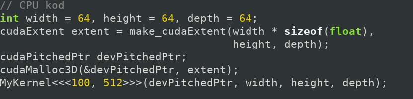 ## Poravnan 3D niz primer 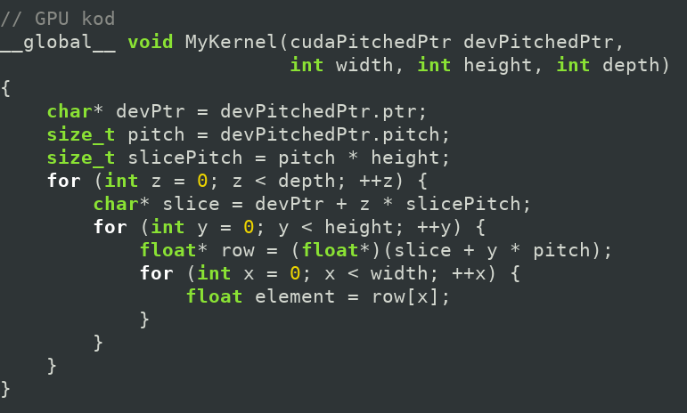
Primer primene deljene memorije
- Sledi primer (preuzet kao i većina koda ovde iz zvanične dokumentacije) primene deljene memorije radi optimiziacije pristupa.
- Prvi deo primera je implementacija algoritma množenja matrice na GPU-u koji koristi ’naivan’ pristup memoriji.
- Drugi deo primera je isti algoritam, ali sa primenom deljene memorije da se algoritam ubrza.
Naivan pristup memoriji
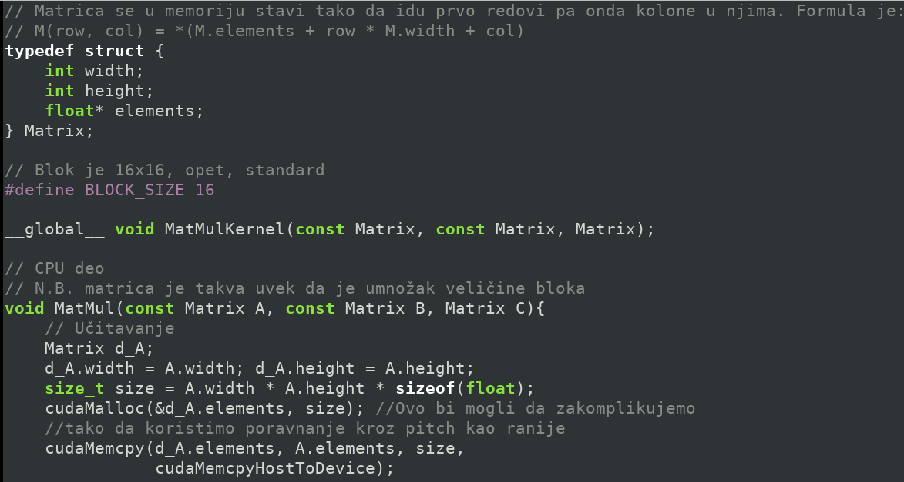
Naivan pristup memoriji
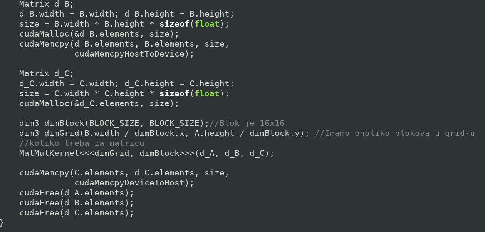
Naivan pristup memoriji
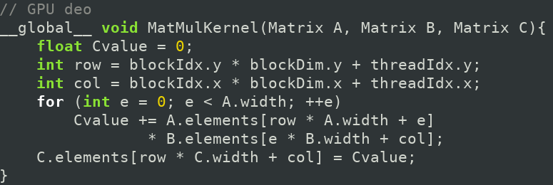
Šta je ovde problem?
- Svaka nit pristupi svim vrednostima matrice koje su joj potrebne.
- Tu prirodno dolazi do replikacije pristupa, ali po nepredvidivom rasporedu što znači da konsolidacija pristupa ne radi ni približno dobro kako bi trebala.
- Kao rezultat metod koji može da se koristi jeste da se adaptira nešto slično Kanonovom algoritmu gde se bloku da pod-matrica matrica C za proračun i de se proračun podeli u faze (kojih ima onoliko kolika je jedna dimenzija gird-a) u kojoj se u toj fazi dobave pod-matrice matrice A i B koje su neophodne za tu fazu.
- Te matrice se dobave jednom i smeste se u deljenu memoriju gde ih sve niti bloka koriste. Ubrzanje je dramatično.
Optimizovan pristup memoriji
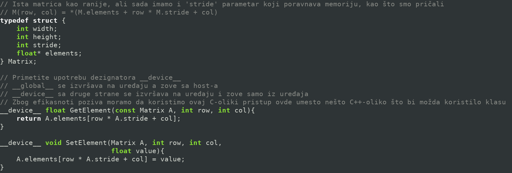
Optimizovan pristup memoriji
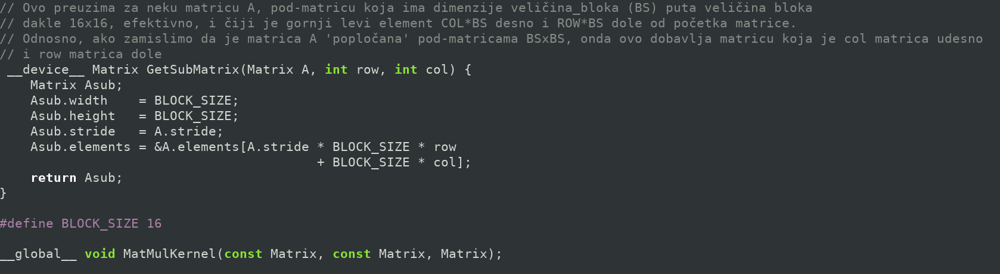
Optimizovan pristup memoriji
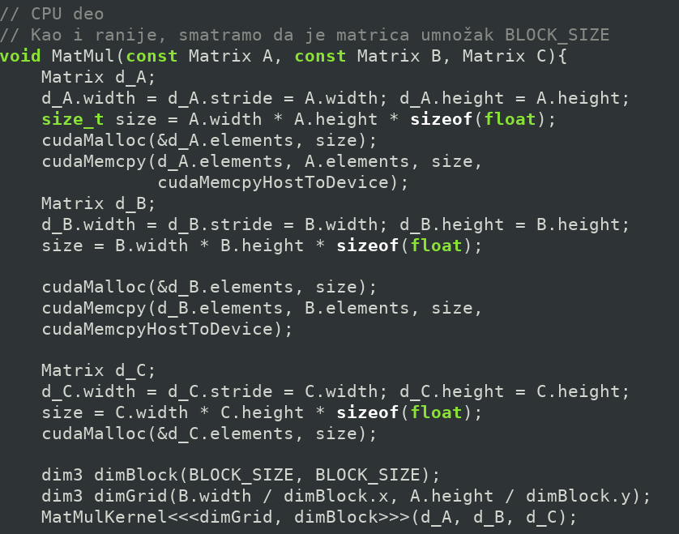
Optimizovan pristup memoriji
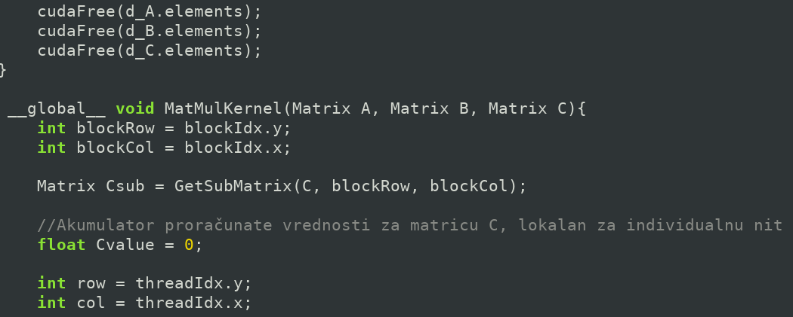
Optimizovan pristup memoriji
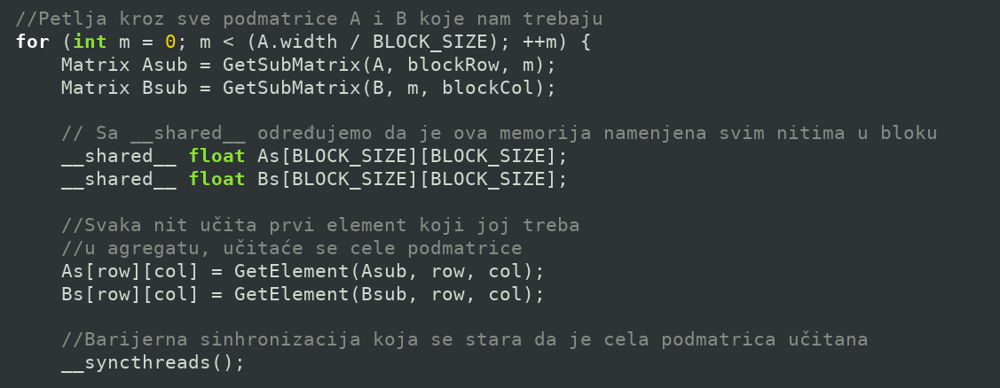
Optimizovan pristup memoriji
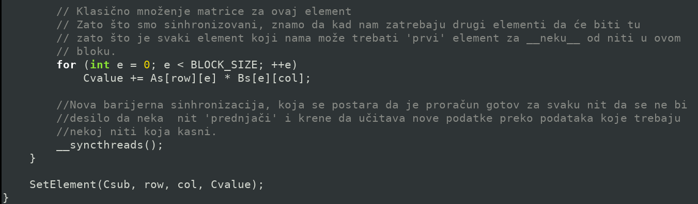